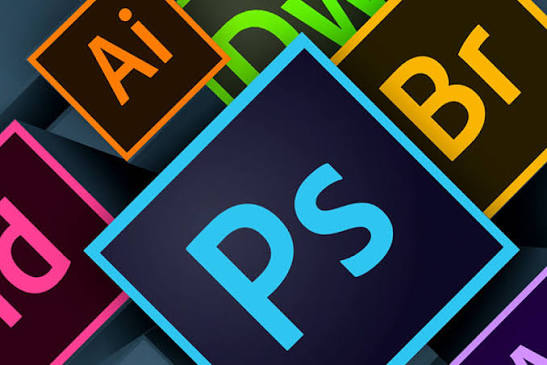

Perfil
Estudiante de Diseño y Comunicación Visual, también cuento con experiencia como masajista y atención al cliente
Educación
-
Universidad Nacional de Lanús
Diseño y Comunicación Visual
Experiencia laboral
-
Masajista
Atención a clientes y realización de masajes
-
Diseñadora gráfica freelance
Creación de piezas gráficas para redes sociales, flyers y contenido visual
Habilidades
- Diseño gráfico
- Adobe Photoshop
- Adobe Illustrator
- Canva
- Edición de imágenes
- Diseño para redes sociales
- Comunicación visual
- Trabajo en equipo
Software y Herramientas
Manejo de herramientas digitales para proyectos de diseño, retoque fotográfico y maquetación

Idiomas
- Español - Nativo
- Inglés - Intermedio